原文连接:https://www.cnblogs.com/bluersw/p/11610710.html
Consul集群Server模式
架构示意图
Consul在生产环境下运行模式分为两种：Server模式和Client模式（dev模式属于开发模式不在这里讨论），我们先用Server模式搭建一个Consul集群,示意图如下：
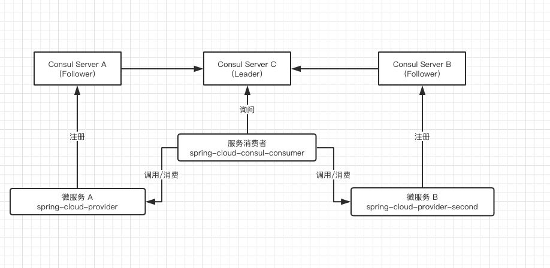
Consul Server A、B、C是启动的三个Consul服务运行于Server模式下，其中Consul Server C 是“总指挥”，他们的Leader，Consul Server A和B是Follower当“替补”，他们都可以提供注册和查询微服务器的功能。Leader负责给其他Follower同步数据和监控各个节点的健康，Leader是由他们仨根据Raft一致性算法选举出来的，Server模式运行的Consul服务不能太多，推荐3或5个，因为太多开会选举性能不佳，并且个数要求是奇数（选举算法要求）。
spring-cloud-provider是模拟的服务提供者程序，spring-cloud-provider-second也是模式的服务提供者程序只是返回内容上不太一样（便于区分是哪个服务返回），他们都在Consul中注册同一个服务名称：service-provider，spring-cloud-consul-consumer是模拟服务消费者程序，负责使用service-provider服务。
搭建环境
为了测试方便我们使用docker进行部署，上述服务可以从以下地址下载：
bluersw/spring-cloud-consul-consumer 是服务消费者镜像里面运行的程序项目叫spring-cloud-consul-client，因为名字的起的不讲究导致了混乱，spring-cloud-consul-client不是Consul Client。
docker pull consul
docker pull bluersw/spring-cloud-consul-consumer:v1
docker pull bluersw/spring-cloud-provider:v1
docker pull bluersw/spring-cloud-provider-second:v1启动Consul脚本(Windows版本的Docker运行命令时参数的IP地址要用"ip地址",比如：-client="0.0.0.0")：
docker run -i -t -p 8500:8500 --name=ConsulServer-C consul agent -server -ui -node=Server-C -bootstrap-expect=3 -client=0.0.0.0
docker run -i -t -p 8501:8500 --name=ConsulServer-A consul agent -server -ui -node=Server-A -bootstrap-expect=3 -client=0.0.0.0 -join=172.17.0.2
docker run -i -t -p 8502:8500 --name=ConsulServer-B consul agent -server -ui -node=Server-B -bootstrap-expect=3 -client=0.0.0.0 -join=172.17.0.2bootstrap-expect是指最少几个Server模式下的Consul服务，整个集群才启动。
join=172.17.0.2这个地址就是Server-C的IP地址，Server-C是Leader。
启动后查看127.0.0.1:8500端口查看后台：
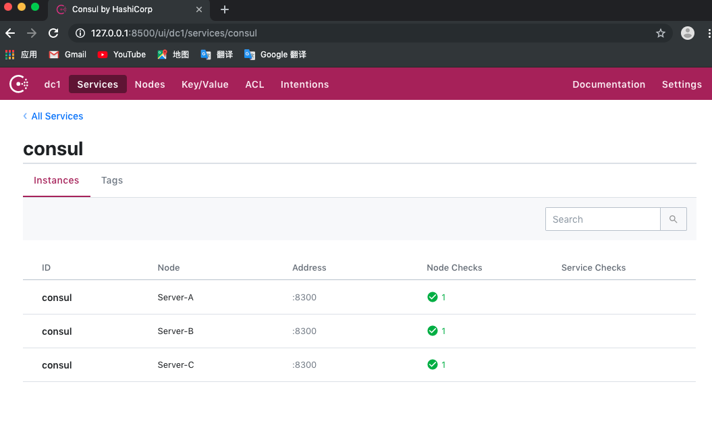
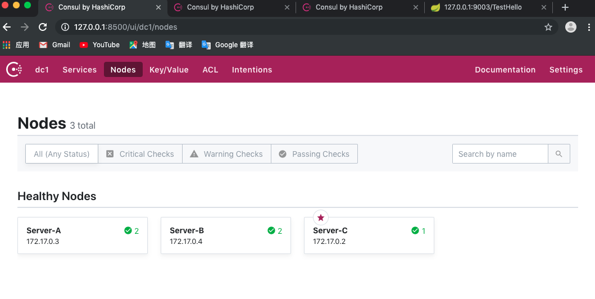
然后启动消费者和生产者docker：
docker run -t -i --name=spring-cloud-provider -p 9001:9001 bluersw/spring-cloud-provider:v1
source /etc/profile
cd /opt
java -jar spring-cloud-provider-0.0.1-SNAPSHOT.jar
docker run -t -i --name=spring-cloud-provider-second -p 9002:9002 bluersw/spring-cloud-provider-second:v1
source /etc/profile
cd /opt
java -jar spring-cloud-provider-second-0.0.1-SNAPSHOT.jar
docker run -t -i --name=spring-cloud-consul-consumer -p 9003:9003 bluersw/spring-cloud-consul-consumer:v1
source /etc/profile
cd /opt
java -jar spring-cloud-consul-client-0.0.1-SNAPSHOT.jar注册服务示例：
spring.application.name=spring-cloud-provider-01
server.port=9001
#172.17.0.3是Server-A
spring.cloud.consul.host=172.17.0.3
spring.cloud.consul.port=8500
#注册到consul的服务名称
spring.cloud.consul.discovery.serviceName=service-provider
#以下两项如果不配置健康检查一定失败
spring.cloud.consul.discovery.prefer-ip-address=true
spring.cloud.consul.discovery.health-check-path=/actuator/healthspring.application.name=spring-cloud-provider-02
server.port=9002
#172.17.0.4是Server-B
spring.cloud.consul.host=172.17.0.4
spring.cloud.consul.port=8500
#注册到consul的服务名称
spring.cloud.consul.discovery.serviceName=service-provider
#以下两项如果不配置健康检查一定失败
spring.cloud.consul.discovery.prefer-ip-address=true
spring.cloud.consul.discovery.health-check-path=/actuator/health
启动后Docker容器内容：
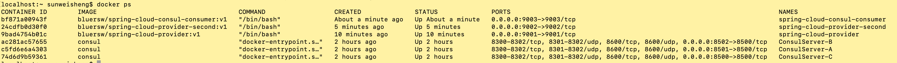
service-provider服务已经注册完毕：

访问127.0.0.1:9003/TestHello 测试部署结果：
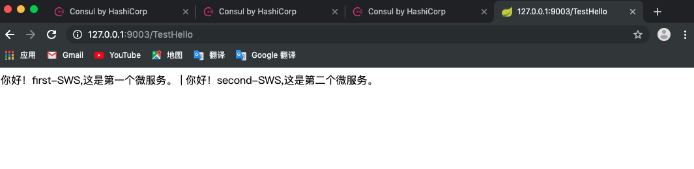
模拟服务器故障
关闭Consul Server B
Consul Server B 已经不能访问：
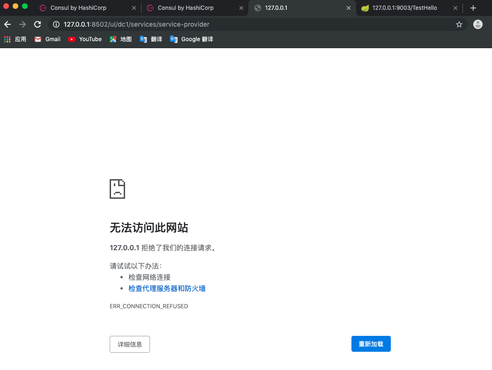
从Leader上看Server-B节点已经故障：
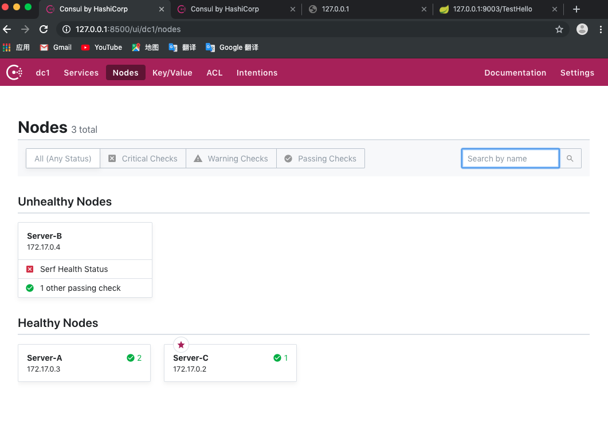
从Leader上看服务service-provider的注册节点检查已经出现红叉：
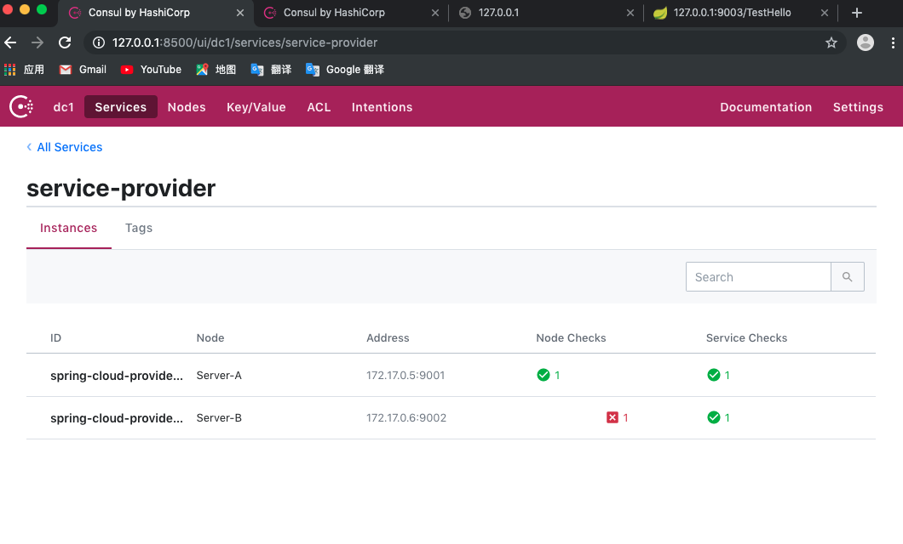
因为Consul处理机制consul节点故障其中注册的服务都视为不可用，所以spring-cloud-provider-second服务虽然没有出问题，但已经不再被轮询到，两次访问都是访问的spring-cloud-provider服务。
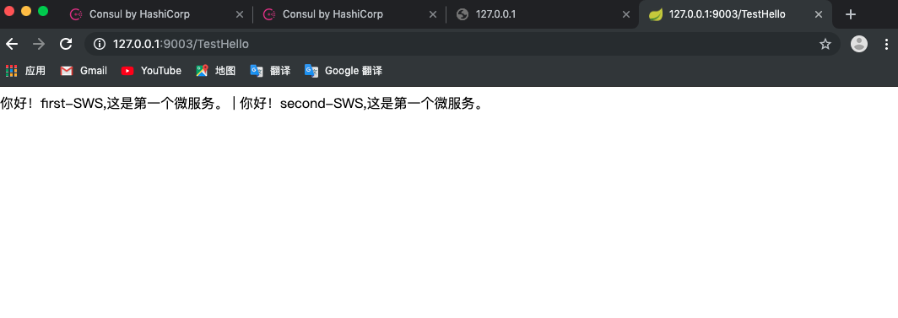
恢复Consul Server B
重新启动Consul Server B后，一切自动恢复：
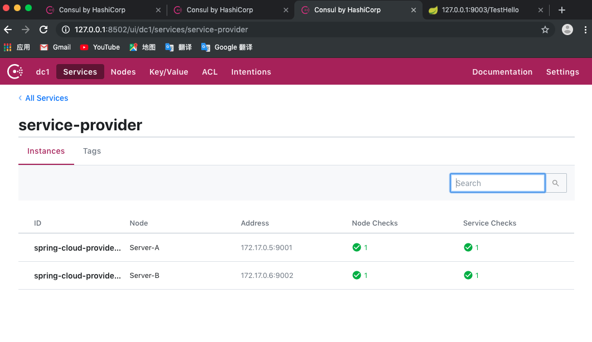
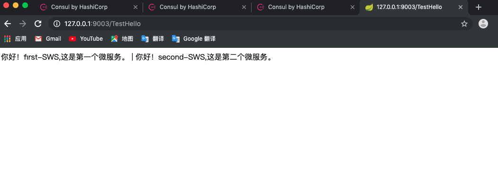
关闭Consul Server C
因为关闭Consul Server C是Leader，所以Consul Server C被关闭之后，Leader被Consul Server B接管：
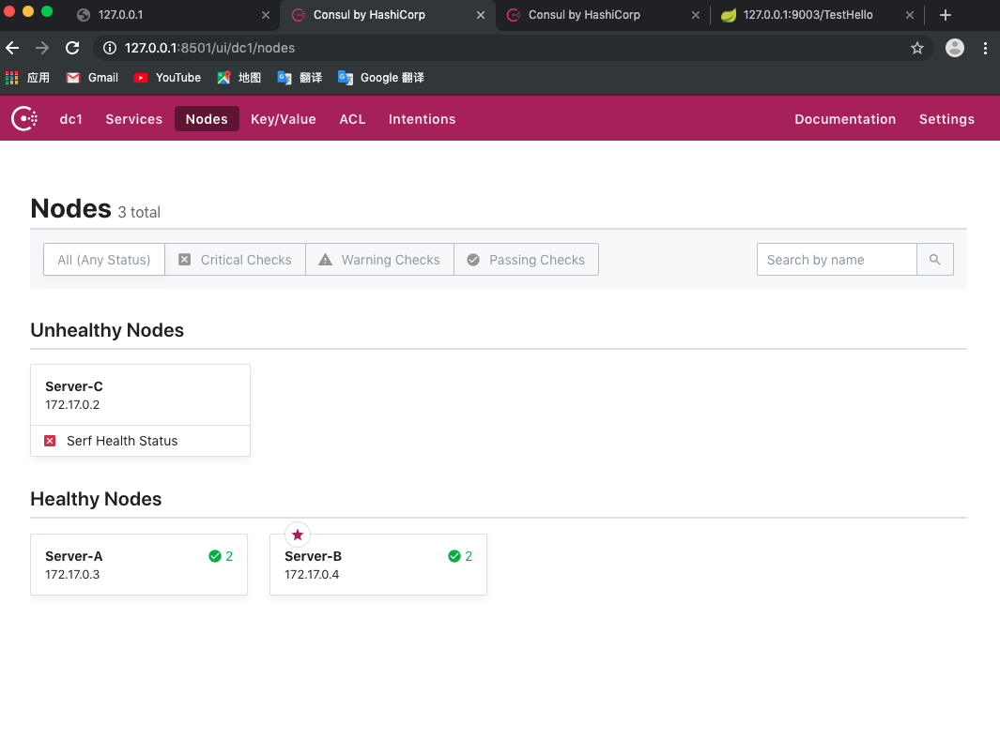
此时如果spring-cloud-consul-consumer程序不重新启动，那么因为其保留着上次查询服务的缓存所以还可以继续显示正常：
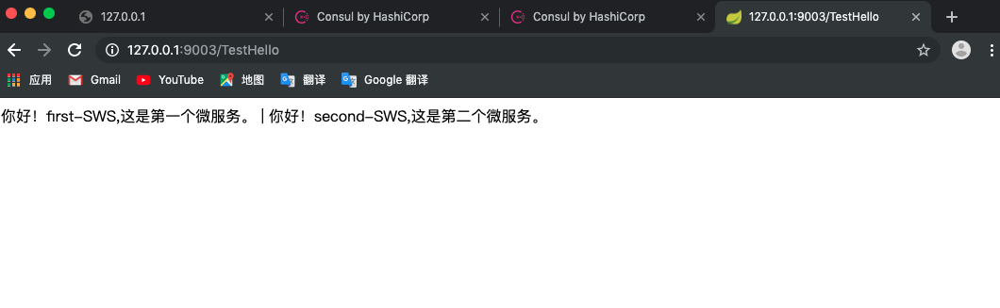
如果重新启动因为找不到注册服务的Consul Server C会在访问时发生异常：
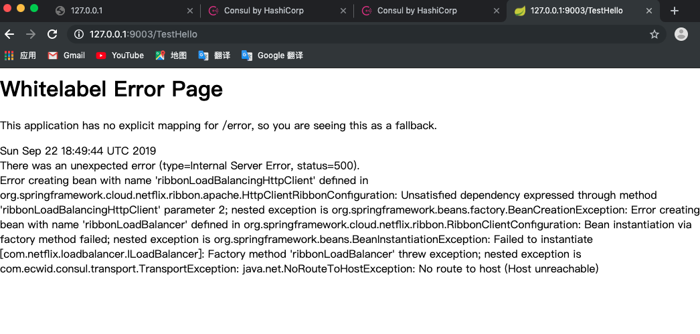
恢复Consul Server C
Consul Server C之后，Leader仍然是Consul Server B
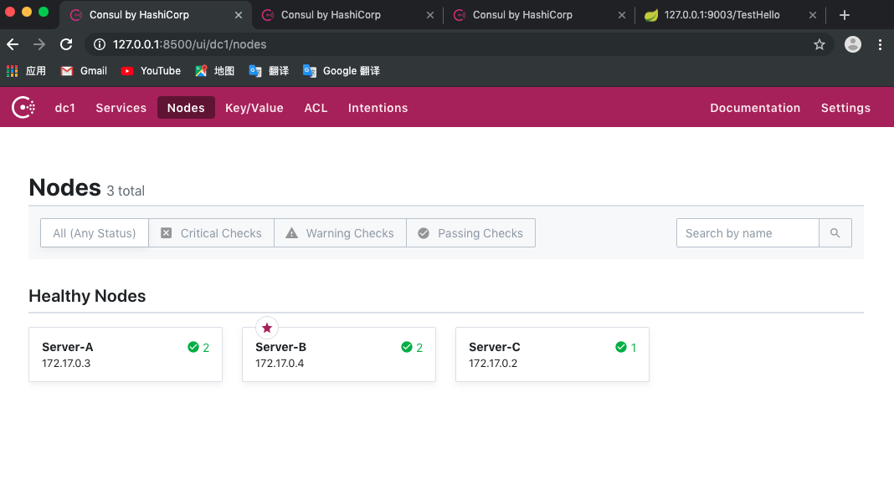
相关服务恢复正常，由上面的测试可以知道Consul大致的故障处理策略：
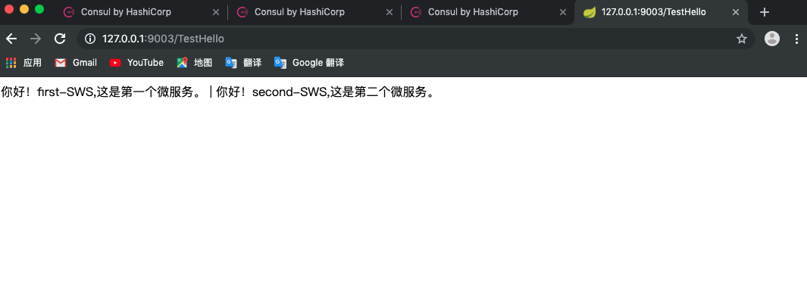
源码
Github仓库:https://github.com/sunweisheng/spring-cloud-example